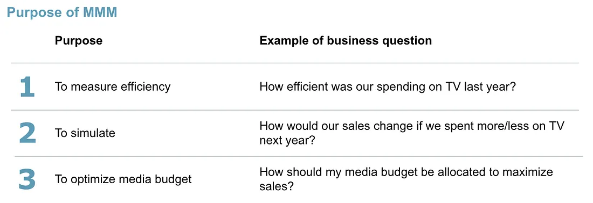
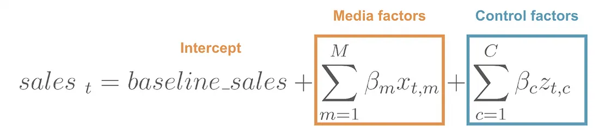
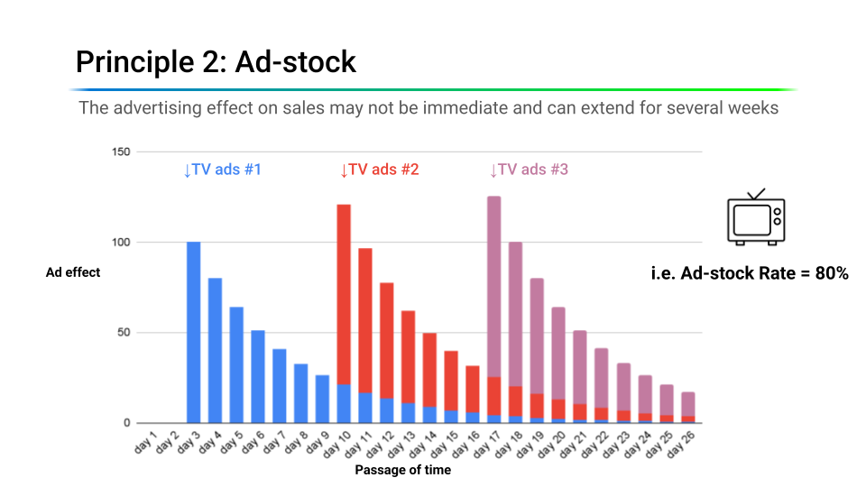
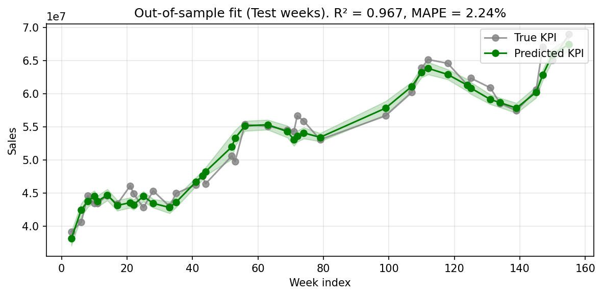
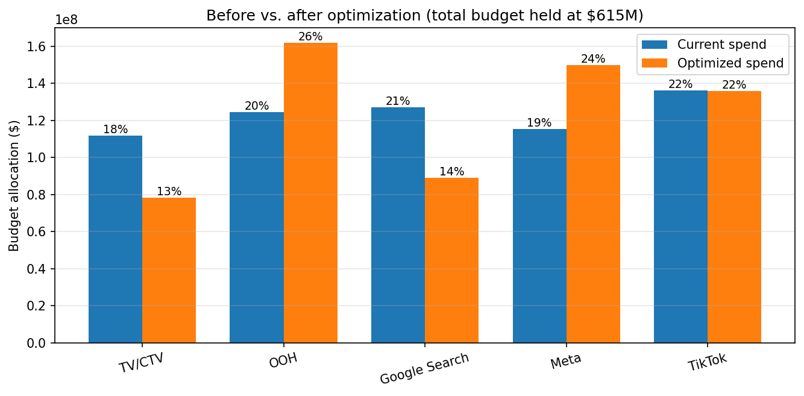

6.2 Construire et optimiser un MMM
À propos de la version française
Cette page est une traduction par IA de la version anglaise de Marketing Science in Python. La version anglaise fait foi et prévaut en cas de divergence. Le code, les notebooks et le texte intégré aux images restent en anglais. Lire la version anglaise
Qu’est-ce que la modélisation du mix marketing ?
La modélisation du mix marketing (MMM) est une approche statistique qui utilise des séries temporelles agrégées (généralement les ventes hebdomadaires et les dépenses médias par canal) pour estimer la contribution de chaque canal marketing aux résultats de l’entreprise. Contrairement à l’attribution au niveau de l’utilisateur, le MMM exploite des données agrégées et ne nécessite aucun suivi individuel, ce qui le rend résilient face à la disparition des cookies, à App Tracking Transparency et aux restrictions des écosystèmes fermés.
Le MMM remplit trois fonctions :
- Mesurer : quantifier la contribution de chaque canal et son retour sur dépenses publicitaires (ROAS).
- Simuler : répondre à des questions hypothétiques, par exemple : que deviennent les ventes si nous réduisons les dépenses TV de 30 % ?
- Optimiser : répartir un budget fixe entre les canaux pour maximiser le résultat attendu.

Le regain d’intérêt pour le MMM ne relève pas simplement de la nostalgie. À mesure que le suivi individuel devient moins fiable, la modélisation agrégée constitue désormais le moyen le plus pratique de mesurer l’efficacité des médias sur l’ensemble des canaux.
L’équation du MMM
Dans sa forme la plus simple, le MMM est une régression des ventes hebdomadaires sur les dépenses médias, qui tient compte des jours fériés, des promotions et des autres facteurs non médiatiques :
\[ y_t = \beta_0 + \sum_{c=1}^{C} \beta_c \cdot x_{c,t} + \sum_{k} \gamma_k \cdot z_{k,t} + \varepsilon_t \]
où \(y_t\) représente les ventes à l’instant \(t\), \(x_{c,t}\) les dépenses du canal \(c\), \(z_{k,t}\) les variables de contrôle et \(\varepsilon_t\) le bruit.

Cette régression simple ne suffit pas, pour deux raisons. Premièrement, les effets des médias ne sont pas immédiats : une publicité télévisée diffusée cette semaine peut encore influencer les achats au cours des semaines suivantes (rémanence). Deuxièmement, les effets des médias ne sont pas linéaires : le centième GRP (gross rating point, une mesure standard de la pression publicitaire télévisée) d’une semaine apporte moins que le premier (rendements décroissants).
Un modèle plus réaliste applique des transformations d’adstock (rémanence) et de saturation (rendements décroissants) avant la combinaison linéaire :
\[ y_t = \beta_0 + \sum_{c=1}^{C} \beta_c \cdot \text{Saturation}\bigl(\text{Adstock}(x_{c,t})\bigr) + \sum_{k} \gamma_k \cdot z_{k,t} + \varepsilon_t \]

Saturation (rendements décroissants)
Tout canal média finit par saturer : plus vous dépensez sur un canal, moins chaque dollar supplémentaire rapporte. Le premier million de dollars dépensé en TV génère des ventes incrémentales importantes ; le dixième million en génère beaucoup moins. Figure 4 présente les trois régimes qui en résultent : une zone de sous-investissement où chaque dollar reste très productif, une plage optimale et une zone de saturation où les dépenses supplémentaires sont en grande partie gaspillées.

La fonction de Hill est le moyen le plus courant de modéliser ce phénomène :
\[ \text{Hill}(x) = \frac{x^S}{x^S + K^S} \]
où \(K\) (le point de demi-saturation, souvent appelé EC50) est le niveau de dépenses auquel le canal atteint 50 % de son effet maximal, et \(S\) (la pente) détermine à quel point la courbe s’infléchit.
Une remarque pratique sur \(K\) lorsque vous définissez sa loi a priori. Meridian applique l’adstock sans le normaliser : un canal dont la demi-vie est de six semaines présente donc une valeur après adstock plusieurs fois supérieure à sa médiane hebdomadaire, et son point de demi-saturation doit se situer sur cette échelle plus élevée. Une loi a priori centrée pour un canal à décroissance rapide exclura la vraie valeur pour un canal à décroissance lente. La démonstration conserve donc sa structure par étape du parcours de conversion pour l’adstock et attribue à la saturation une loi a priori unique, indépendante du canal, suffisamment large pour couvrir toutes les courbes des données, puis laisse la vraisemblance situer chacune d’elles.
Cette courbure fait tout l’intérêt de la réallocation budgétaire. Dans Figure 5, le canal X se trouve bien à l’intérieur de sa zone de saturation, tandis que le canal Y dispose encore d’une marge de progression. Réduire le budget de X coûte 1 million de dollars de ventes, tandis qu’ajouter ce budget à Y rapporte 3 millions de dollars : un gain net de 2 millions de dollars pour une dépense totale identique. Transférer du budget des canaux saturés vers les canaux sous-investis peut accroître le rendement total, même si le ROAS moyen du canal saturé paraît supérieur. Le ROAS moyen divise le chiffre d’affaires incrémental total d’un canal par ses dépenses totales ; le ROAS marginal correspond à la pente de la courbe au point où se situe actuellement le canal, et c’est ce que rapporte le dollar suivant.

Adstock (effets de rémanence)
La publicité ne cesse pas d’agir dès que sa diffusion s’arrête. L’adstock rend compte de cet effet différé. Sa forme la plus simple est la décroissance géométrique :
\[ \text{Adstock}_t = x_t + \lambda \cdot \text{Adstock}_{t-1} \]
où \(\lambda \in [0, 1]\) est le taux de rétention. Un \(\lambda\) plus élevé signifie une rémanence plus longue. Figure 6 et Figure 7 montrent les mêmes trois vagues publicitaires avec deux taux de rétention. À un taux élevé, caractéristique des canaux du haut du parcours de conversion comme la TV, l’effet de chaque vague persiste bien après sa diffusion, et les effets des vagues qui se chevauchent se cumulent. À un taux plus faible, caractéristique des canaux numériques, l’effet s’estompe en quelques jours.


Le taux de rétention est plus facile à interpréter sous la forme d’une demi-vie, c’est-à-dire le nombre de périodes nécessaires pour que l’effet diminue de moitié, \(\ln(0.5) / \ln(\lambda)\). À une granularité hebdomadaire, les canaux du haut du parcours de conversion comme la TV sont couramment modélisés avec des demi-vies de plusieurs semaines, tandis que les canaux du bas du parcours comme le référencement payant voient leur effet décroître en environ une semaine. La démonstration associée modélise chaque canal avec un adstock géométrique sur une fenêtre de 12 semaines et centre les lois a priori de décroissance selon l’étape du parcours : 6 semaines pour TV/CTV et OOH (\(\lambda \approx 0.89\)), 3 semaines pour Meta et TikTok (\(\lambda \approx 0.79\)) et 1 semaine pour Google Search (\(\lambda = 0.5\)). Considérez ces valeurs comme des a priori de départ que les données doivent faire évoluer, et non comme des faits : les recommandations publiées varient, et les valeurs appropriées dépendent de votre catégorie et de la granularité de vos données. Un taux de rétention « hebdomadaire » appliqué à des données quotidiennes implique une demi-vie très différente.
Il existe des solutions plus souples. L’adstock de Weibull permet une décroissance non monotone : l’effet peut culminer quelques jours après l’exposition avant de diminuer, ce qui représente mieux des canaux comme l’e-mail ou le courrier publicitaire, pour lesquels il existe un délai de traitement naturel.
Données requises
Le MMM nécessite trois catégories de données d’entrée :
- Variable cible : chiffre d’affaires ou volume des ventes hebdomadaire au niveau de la marque ou du produit.
- Dépenses médias : dépenses hebdomadaires par canal (TV, réseaux sociaux, publicité display, recherche, courrier publicitaire, etc.).
- Variables de contrôle : jours fériés, indicateurs de saisonnalité, promotions, changements de prix, activité des concurrents, facteurs macroéconomiques ou tout facteur non médiatique susceptible d’expliquer les variations des ventes.

Granularité recommandée :
- Temps : hebdomadaire. Les données quotidiennes sont plus bruitées ; les données mensuelles comportent trop peu d’observations.
- Historique : au moins 2 à 3 ans de données (environ 104 à 156 semaines). Avec moins d’historique, il devient difficile de distinguer les effets des médias de la saisonnalité.
- Géographie : le niveau national ou celui de la marque est courant. Les modèles infranationaux (par zone géographique) peuvent être plus puissants, mais ils nécessitent davantage de données et une modélisation soigneuse.
- Canaux : n’incluez que les canaux dont les dépenses varient réellement. Si un canal dépense la même somme chaque semaine, le modèle ne peut pas en apprendre l’effet.
Une vérification s’ajoute à ces exigences et s’oublie facilement. L’adstock et la saturation lissent la contribution d’un canal, si bien que les médias peuvent finir par faire moins varier les ventes d’une semaine à l’autre que ce que les variables de contrôle n’expliquent pas. Dans ce cas, les coefficients médias ne sont pas identifiés, et aucun choix de loi a priori n’y remédie : l’estimateur ne dispose plus de rien pour séparer les médias du niveau de base. Comparez les deux quantités avant l’ajustement. Le notebook associé le fait à l’étape 2b.
Autre raison pour laquelle les variables de contrôle comptent : les dépenses médias et les ventes partagent généralement, par construction, une tendance et une saisonnalité, et un calendrier commun peut à lui seul créer une forte corrélation entre deux séries qui n’ont rien à voir l’une avec l’autre. Les contrôles de saisonnalité et de tendance empêchent cette structure commune de se retrouver dans les coefficients médias.

L’approche bayésienne
Avant de parcourir une implémentation, un choix de conception mérite notre attention : le MMM moderne est principalement bayésien. La raison est pratique, et non philosophique.
- Les lois a priori encodent les connaissances métier. Si votre équipe sait, grâce à des expériences passées, que le ROAS de la TV est d’environ 2,0, vous pouvez encoder cette information dans une loi a priori. Le modèle actualise cette croyance à partir des données. Sans lois a priori, le modèle pourrait produire des estimations invraisemblables simplement à cause de la multicolinéarité. Le revers de cette commodité mérite d’être énoncé une fois : pour un canal que les données ne permettent pas d’identifier, le nombre renvoyé par le modèle est celui que vous avez inscrit dans la loi a priori. La démonstration comporte un tel canal, et la section 6.3 passe à la mesure de son effet.
- Des intervalles de crédibilité, plutôt que des estimations ponctuelles. Au lieu de « ROAS TV = 2,3 », vous obtenez « ROAS TV : médiane 2,3, intervalle de crédibilité à 90 % [1,1 ; 3,8] ». Un intervalle large signifie que vous devez être prudent avant de procéder à d’importants transferts budgétaires fondés sur cette estimation.
- Une intégration naturelle avec les expériences. Lorsque vous réalisez une expérience de mesure du gain incrémental par zone géographique et estimez l’effet incrémental d’un canal, vous pouvez intégrer ces résultats au MMM sous la forme d’une loi a priori informative. Cela resserre la loi a posteriori et améliore l’identifiabilité, selon une démarche que nous développons en détail à la section 6.4.
C’est pourquoi des outils comme Meridian et PyMC-Marketing reposent sur l’inférence bayésienne.
Plusieurs bibliothèques open source mettent en œuvre les concepts de ce chapitre. Voici les trois plus utilisées :
| Bibliothèque | Fonctionnalités | GitHub |
|---|---|---|
| Meridian | MMM bayésien en Python proposé par Google. Prise en charge poussée des données géographiques et de la calibration à partir d’expériences. Successeur de LightweightMMM, désormais déprécié. | google/meridian |
| PyMC-Marketing | Boîte à outils de modélisation marketing bayésienne en Python. Couvre le MMM, la valeur vie client (CLV) et les modèles de choix des clients. Souple, mais exige davantage de discernement dans la modélisation. | pymc-labs/pymc-marketing |
| Robyn | Bibliothèque de MMM en R proposée par Meta. Utilise la régression Ridge et Prophet. Adaptée à la création rapide de modèles de référence. | facebookexperimental/Robyn |
Les concepts fondamentaux (adstock, saturation, estimation bayésienne et optimisation budgétaire) sont les mêmes dans les trois bibliothèques. Ce chapitre utilise Meridian parce qu’il repose sur Python et qu’il est facile à prendre en main : même avec peu de personnalisation, il produit des rapports HTML soignés de deux pages sur les résultats du modèle et l’optimisation budgétaire, que vous pouvez partager avec les parties prenantes. Le parcours ci-dessous fournit des liens vers les deux.
Un parcours guidé avec Meridian
Notebook associé : sec6.2_6.4_mmm_meridian.ipynb présente un processus complet de MMM avec la bibliothèque Meridian de Google.
Consulter sur GitHub
Chargement et préparation des données. Le jeu de données de démonstration contient 157 semaines de données de ventes avec 5 canaux médias (TV/CTV, OOH, Google Search, Meta, TikTok) et des contrôles pour les jours fériés et la saisonnalité. Meridian utilise un DataFrameInputDataBuilder pour construire ses données d’entrée à partir d’un DataFrame pandas. La mise à l’échelle est gérée en interne ; aucune normalisation manuelle n’est nécessaire. Le détail important est que Meridian applique la saturation à media_cols (volume d’exposition, par exemple les impressions ou les clics), tandis que media_spend_cols sert de base de coût pour le ROAS.
channels = ["TV/CTV", "OOH", "Google Search", "Meta", "TikTok"]
media_cols = [
"tv_ctv_impressions", "ooh_impressions", "google_clicks",
"meta_impressions", "tiktok_impressions",
]
media_spend_cols = [
"tv_ctv_spend", "ooh_spend", "google_spend",
"meta_spend", "tiktok_spend",
]
control_cols = [
"seas_sin52", "seas_cos52",
"hldy_thanksgiving", "hldy_christmas",
"trend", "trend_sq",
]
builder = data_frame_input_data_builder.DataFrameInputDataBuilder(
kpi_type='revenue',
default_kpi_column='sales',
default_time_column='time',
default_geo_column='geo',
)
data = (
builder
.with_kpi(df)
.with_media(df,
media_cols=media_cols,
media_spend_cols=media_spend_cols,
media_channels=channels)
.with_controls(df, control_cols=control_cols)
.build()
)Entraînement du modèle. Meridian utilise le No-U-Turn Sampler (NUTS) pour les méthodes MCMC. Nous effectuons d’abord des tirages dans la loi a priori pour vérifier leur plausibilité, puis échantillonnons la loi a posteriori.
mmm = model.Meridian(input_data=data, model_spec=model_spec)
mmm.sample_prior(500)
mmm.sample_posterior(
n_chains=4, n_adapt=500, n_burnin=500, n_keep=1000, seed=SEED
)
# Production runs typically use n_chains=10, n_keep=2000 (≈ 5× compute).Diagnostics. Le ModelReviewer de Meridian exécute des contrôles qualité automatisés (convergence, validation du niveau de base, qualité de l’ajustement et décalage entre les lois a priori et a posteriori) et attribue un statut de réussite, d’examen nécessaire ou d’échec.

Ajustement du modèle. En réservant aléatoirement 25 % des semaines pour la validation, la démonstration obtient un R² ≈ 0,97 dans l’échantillon d’entraînement et un R² ≈ 0,97 hors échantillon. Un faible écart entre les deux est attendu ici : des données synthétiques associées à un échantillon de validation aléatoire (en interpolation) constituent un cas presque idéal. Sur des données de production comportant du bruit réel, des périodes de rupture de tendance et une activité promotionnelle irrégulière, un R² hors échantillon compris entre 0,6 et 0,7 est courant et acceptable. Fiez-vous au sens des estimations médias, et pas seulement à la qualité globale de l’ajustement.
Pourquoi un échantillon de validation aléatoire, alors que la section 5.3 rejette catégoriquement les découpages aléatoires ? Parce que les deux évaluent des choses différentes. Une prévision doit extrapoler au-delà de sa fenêtre d’entraînement et doit donc être évaluée à partir d’une origine fixe, vers le futur. Un MMM attribue les ventes déjà réalisées aux différents facteurs, au sein d’une période qu’il a observée. Réserver un bloc final pour la validation lui demanderait d’extrapoler la tendance et la saisonnalité au-delà de cette période, ce qui ferait baisser le R² hors échantillon pour des raisons sans rapport avec la mesure des médias. Répartir les semaines de validation sur la période permet de poser la question utile pour ce modèle : la structure ajustée reste-t-elle valable sur des semaines que la vraisemblance n’a jamais vues ? Interprétez ce nombre comme un diagnostic d’interpolation, et non comme la preuve que le modèle peut prédire le trimestre suivant.


Enseignements sur les médias. Le modèle fournit des estimations du ROAS avec des intervalles de crédibilité pour chaque canal. Des intervalles larges signifient qu’il existe une réelle incertitude : c’est une propriété souhaitable, pas un défaut. Les estimations ponctuelles seules peuvent induire en erreur ; les intervalles de crédibilité indiquent le degré de confiance à accorder aux résultats.


Vous n’avez pas à construire ces graphiques un par un. Un seul appel, summarizer.Summarizer(mmm).output_model_results_summary(...), produit un rapport HTML de deux pages prêt à être partagé avec les parties prenantes, qui couvre l’ajustement du modèle, les contributions des canaux, le ROAS avec ses intervalles de crédibilité et les courbes de réponse. Voici celui produit par le notebook associé : summary_output.html.
Allocation budgétaire
Les trois fonctions du modèle (mesurer, simuler, optimiser) convergent ici. Une fois les courbes de réponse ajustées, l’optimiseur recherche l’allocation qui maximise l’indicateur clé de performance (KPI) prédit sous une contrainte de budget fixe :
budget_optimizer = optimizer.BudgetOptimizer(mmm)
optimization_results = budget_optimizer.optimize()Il s’agit de la même logique de saturation que dans Figure 5, appliquée cette fois à l’ensemble du mix média plutôt qu’à deux canaux : l’optimiseur transfère du budget vers les canaux où le dollar suivant reste le plus productif.

L’optimiseur offre la même commodité de restitution : optimization_results.output_optimization_summary(...) produit un rapport HTML de deux pages sur la réallocation recommandée (optimization_output.html).
Dans la démonstration, l’optimiseur réalloue les dépenses entre les cinq canaux modélisés (TV/CTV, OOH, Google Search, Meta et TikTok), en transférant du budget des canaux aux courbes de réponse marginale plus plates vers ceux qui disposent encore d’une plus grande marge de progression. Le budget total reste identique ; seule sa répartition change. Des gains de 5 à 10 % de ventes attribuables aux médias (incrémentales), dus à la seule réallocation, sont courants lorsque les équipes mettent en œuvre le MMM pour la première fois ; cette démonstration affiche environ +4 %, soit à peu près +1,4 % des ventes totales.
Une autre règle s’intercale entre l’optimiseur et le plan. L’optimiseur déplace le budget en fonction des moyennes a posteriori ; le plan devrait le déplacer en fonction de ce que le modèle sait réellement. Le notebook applique donc un garde-fou à la quantité utilisée par l’optimiseur, le ROAS marginal : un canal dont l’intervalle à 90 % est plus large que 0,8 fois son estimation est maintenu à son niveau de dépenses actuel, quelle que soit l’ampleur du transfert recommandé. Un intervalle large signifie que le modèle n’a pas identifié ce canal, et la réponse consiste à recueillir des preuves, pas à miser davantage. Il s’agit d’une règle de gouvernance illustrative, et non d’un seuil statistique universel. Dans la démonstration, elle autorise 74 % du mouvement recommandé et maintient un canal inchangé.
Utilisez les résultats de l’optimiseur comme point de départ de la planification, et non comme un plan média définitif. Le modèle ne tient pas compte des contraintes réelles, comme les contrats, les seuils minimaux de dépenses ou les délais opérationnels. Il faut les intégrer séparément. Et dans cette démonstration, il produit une recommandation qu’il ne peut pas défendre :
| Décision à valider | Valeur |
|---|---|
| Canal | Google Search |
| Optimiseur | −30 % (−38,1 millions de dollars), bloqué à la borne inférieure de la contrainte |
| Garde-fou | MAINTIEN : intervalle du ROAS marginal [0,31 ; 8,28], demi-largeur relative de 1,41 |
| Prédiction avant le test | Une réduction de 30 % fait perdre 2,54 dollars de chiffre d’affaires par dollar retiré sur 8 semaines, avec un intervalle de crédibilité à 90 % [0,28 ; 7,21] |
| Test proposé | −30 % sur la recherche dans 8 paires de zones géographiques appariées, pendant 8 semaines |
| Règle de décision | Réduire si la borne supérieure de l’intervalle de confiance à 95 % est inférieure à 2,50 (seuil de rentabilité avec une marge de 40 %) |
La prédiction est consignée dès maintenant, avant tout résultat, afin que l’expérience puisse évaluer le modèle aussi bien que le canal. Puisque les courbes de réponse sont construites à partir de données observationnelles, l’étape suivante consiste à valider cette recommandation. La section 6.3 conçoit et analyse cette expérience ; la section 6.4 réintègre son résultat dans le modèle.
Points clés à retenir
- Le MMM estime la contribution des canaux à partir de séries temporelles agrégées ; il résiste donc à la disparition des cookies et aux écosystèmes fermés. Il nécessite des données hebdomadaires, deux à trois ans d’historique et de réelles variations de dépenses dans chaque canal.
- L’adstock et la saturation transforment les dépenses en courbe de réponse, et cette courbe explique pourquoi l’allocation doit reposer sur le rendement marginal plutôt que sur le rendement moyen. Un canal au ROAS moyen élevé peut déjà être saturé.
- Pour un canal que les données ne permettent pas d’identifier, le modèle renvoie la loi a priori que vous lui avez donnée. Suspendez les recommandations dont les intervalles sont trop larges pour être défendables, consignez la prédiction du modèle et passez à la mesure.